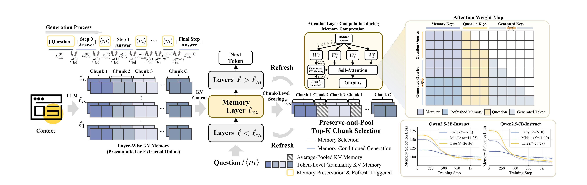
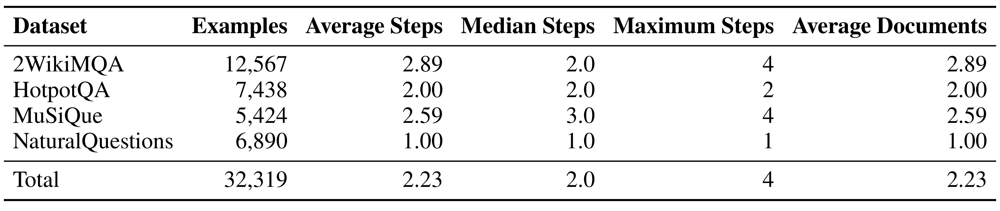
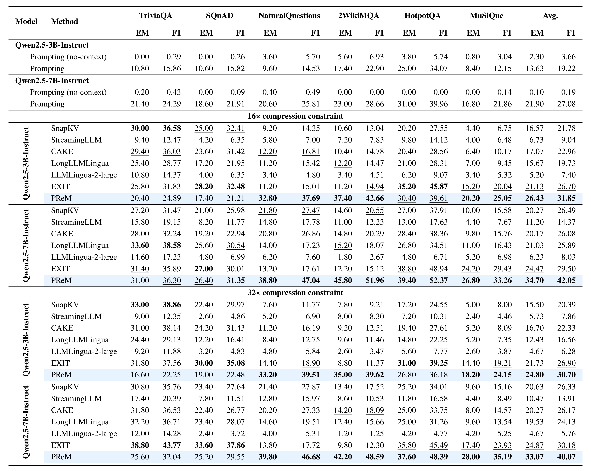
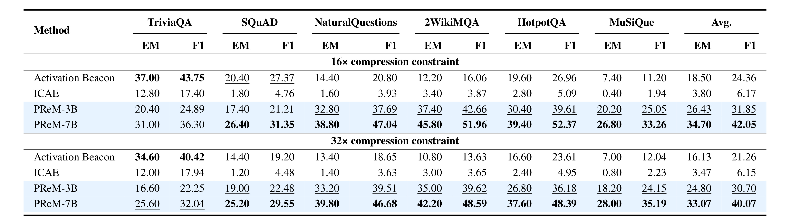
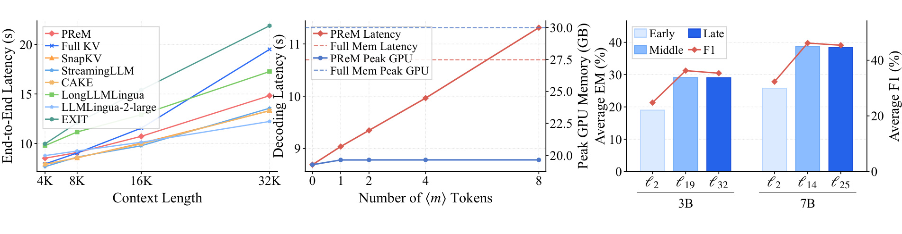
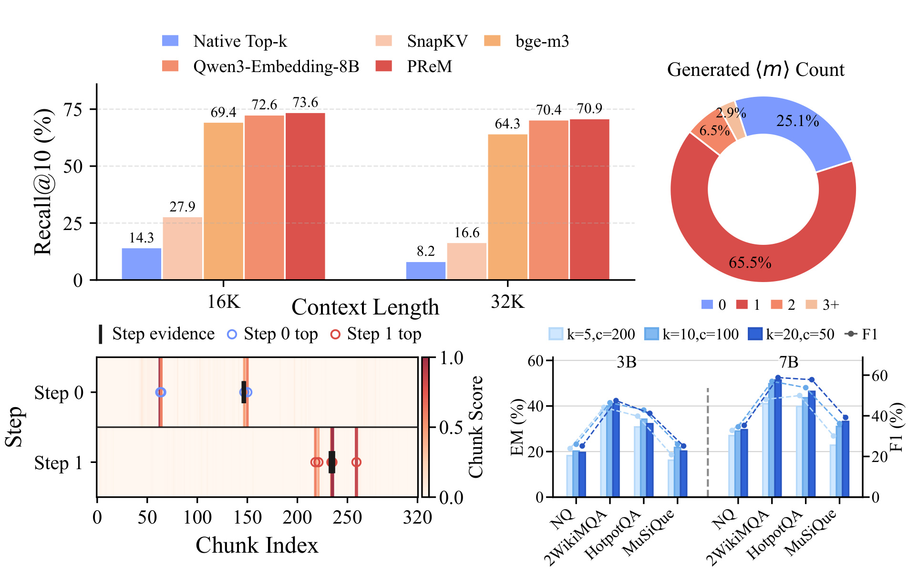
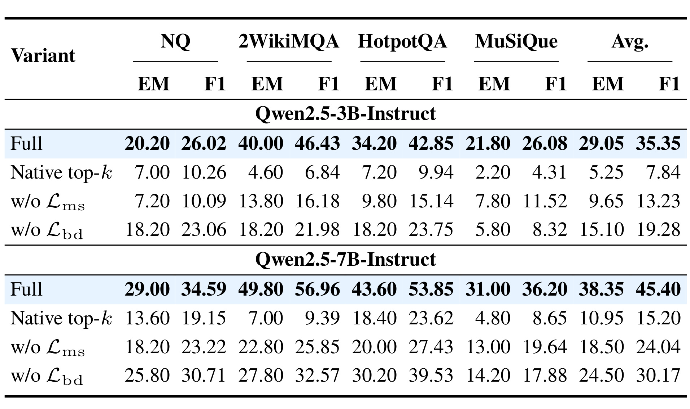

PReM：学习长上下文中保留什么、何时刷新
PReM 的英文全题是 PReM: Learning What to Preserve and When to Refresh for Context Compression。作者为 Bohan Yu、Lei Shen、Chenxi Zhou、Chen Han、Junlin Liu、Wenbo Su、Yu Cheng 与 Bo Zheng，一作主机构是阿里巴巴集团；论文于 2026 年 7 月 15 日提交。论文入口为 arXiv:2607.14327。截至本次核验，arXiv 页面与论文首页均未给出可独立访问的公开代码或项目页，因此本文只讨论论文公开的方法与实验，不能把它视为已开源实现。
现有压缩路线往往在生成前一次性决定保留哪些上下文，或把证据选择交给外部压缩器；多步推理后续需要的证据一旦在早期被丢弃，固定压缩结果就难以随生成状态重新取回。
1. 背景和问题
长上下文推理的成本问题通常被简化成“怎样少存一些 token”。KV-cache 压缩会保留注意力重、位置特殊或近期出现的状态，文本压缩会预先抽取若干句段，软压缩则把长输入编码成较少的连续记忆 token。三条路线都能降低注意力和显存开销，却共享一个隐含前提：一次压缩得到的上下文足以支撑后续所有生成步骤。单跳问答里这个前提有时成立，因为问题本身已经指出应关注的局部；多跳问答则不同，第一步先确定实体，第二步才知道要查哪个属性，第三步可能再沿新实体寻找结论。每一步所需证据不是同一批，初始查询甚至无法完整表达后续的信息需求。
静态证据保留因此有两个具体失败面。第一，早期选择会把当下看似弱相关、后来却成为桥接点的文档删掉；压缩器没有第二次访问原文的机会。第二，外部压缩器和生成模型的状态彼此分离：压缩器依据原始问题选证据，生成模型则在产生中间答案后形成了新的隐状态，两者无法围绕“模型此刻缺什么”共同更新。PReM 的问题意识不只是提高压缩率，而是把压缩从输入预处理改写为生成过程中的记忆控制：模型需要同时学会 what to preserve 与 when to refresh。
论文把完整长上下文保存为模型内部逐层 KV memory，而把真正参与后续注意力的版本限制在固定预算内。这里要分清两个对象：完整记忆是未来刷新时的来源，压缩记忆是当前生成步骤实际读取的状态。若只保留压缩后的版本，早先平均掉的信息仍无法恢复；PReM 保留完整来源，因而可以在下一次刷新时重新选中此前没有进入 top-k 的 chunk。这个设计用更多静态 KV 存储换取动态可访问性，目标不是让上下文“消失”，而是降低每一步注意力直接处理的记忆规模，并把较精细的 token 级状态留给当前真正重要的证据块。
更精确地说，论文同时处理三种粒度的矛盾。token 粒度信息最完整，但 32K 上下文的每层 K/V 都参与注意力会带来高时延与峰值显存；chunk 粒度便于选择，却可能把相关句与噪声捆在一起；单个平均向量成本低，又会抹掉块内细节。PReM 不在三者之间只选一种，而是让 top-k chunk 继续保留全部 token 状态，让其余 chunk 各自退化成一个平均 K/V 对。这样，固定预算的精细槽位可随步骤迁移，低分区域仍留有粗索引。论文所谓 16×/32× 主要对应 2K/1K 的精细保留预算，不能简单理解成完整来源 KV 已按同等比例从存储中删除。
这个问题设定也限定了 PReM 的适用范围。它假设答案证据已经包含在输入的长上下文里，且训练阶段能把答案片段对齐到支持文档，再映射为每一步的 gold chunk。若证据根本不在 32K 输入中，刷新多少次都无法补回；若任务没有清晰的分步支持关系，〈m〉 的监督就可能变弱。因此论文最强的验证场景是多跳 QA，而不是任意开放式生成。评价它时应分别考察三件事：选中的证据是否随步骤变化、模型能否在正确边界发出刷新信号、这些动作是否在固定预算下改善答案质量而没有耗尽时延收益。
另一个关键问题是由哪一层做选择。Transformer 早层更接近词形与局部模式，晚层更接近任务语义，但每层都有自己的 K/V 表示。如果每层独立打分，不仅增加刷新成本，不同层还可能保留互不一致的 chunk。论文先在 Qwen 模型上观察 memory selection loss 的训练轨迹：中后层比早层更快学会证据选择；随后在 Llama 3.2-3B、Llama 3.1-8B 与 Qwen2.5-14B 上看到相同趋势。由此提出 dedicated memory layer：只让一个中后层产生权威选择，其余层复用同一组 chunk 索引，并在自己的表示空间重建压缩记忆。
PReM 与推荐/RAG 工程的联系在于，它把“检索时机”嵌入自回归生成。传统 RAG 往往在请求开始前检索一次，Agent 系统则由外部控制器决定何时再检索；PReM 用特殊 memory token 〈m〉把刷新动作纳入模型词表和训练目标，让生成模型自己发出刷新信号。不过它刷新的是预先编码的 32K KV memory，并不访问新数据源，也不等同于工具调用。准确说，它研究的是固定长上下文内部的动态证据访问，而不是开放世界检索。这个边界既解释了论文的技术价值，也防止把结果外推成通用长期记忆方案。
2. 方法
2.1 Context Memory：逐层 KV 记忆
给定一个有 \(L\) 层、\(H\) 个注意力头的语言模型，PReM 先把 \(N\) 个上下文 token 编码成每层的键和值。此时还没有选择或丢弃任何上下文；这组逐层状态既是初始压缩的输入，也是后续每次刷新能够重新取回旧证据的来源：
符号解释：\(M_\ell\) 是第 \(\ell\) 层的上下文记忆，\(K_\ell^M\) 与 \(V_\ell^M\) 分别是该层的 key/value，\(d\) 是单个注意力头的维度。它们可以离线预计算，也可以由当前模型在线抽取。当前序列的 KV 与压缩后的 \(\widetilde M^{(s)}\) 拼接，再进入标准 self-attention；因此 PReM 没有另造一套注意力算子，改变的是每一步交给原注意力的外部 memory 内容。
论文还让第 1 层保留未压缩的完整上下文访问路径，并只在 \(1<\ell\le \ell_m\) 的层加入选择查询投影 \(W_\ell^c\)。原因是刚离开 embedding 的 〈m〉 表示几乎不含当前推理步骤的语义，若让第 1 层据此选块，刷新结果容易退化成近似固定选择。模型真正需要的是从问题或已生成步骤形成的隐状态中读出新的信息需求，再投影成与标准 query 形状一致的 selection query。
2.2 Memory Selection and Refresh：保留、平均与跨层复用
PReM 以连续 chunk 为选择单位，而不是独立挑选零散 token。这样能把文档中的局部语义与位置结构一起保留，也把一次刷新需要计算的候选数从 \(N\) 降为约 \(N/c\)。设 chunk 大小为 \(c\)，则总块数和第 \(j\) 块的 token 范围为：
符号解释：\(C_j\) 是第 \(j\) 个连续块，\(\bar K_{\ell,j}^M\) 与 \(\bar V_{\ell,j}^M\) 是该块在第 \(\ell\) 层的平均表示。平均不是对所有块一视同仁地压成一个 token，而是为“不在当前 top-k 中”的每个 chunk 各保留一个代表对；被选中的块则保留全部 token 级 KV。这样，压缩记忆既有精细证据，又有覆盖整段上下文的粗粒度索引，不会因为 top-k 以外信息完全消失而失去后续刷新线索。第 \(s\) 个推理步骤的选择位置集合记为 \(P_s\)：\(s=0\) 时使用问题 token 的多个位置，\(s>0\) 时使用刚生成的 〈m〉 位置。第 \(\ell\) 层对 chunk \(j\) 的分数是：
符号解释：\(q_{\ell,h,p}^{(s)}\) 是由当前步骤隐状态经 \(W_\ell^c\) 得到的选择 query，\(\bar k_{\ell,h,j}^M\) 是平均 chunk key 在第 \(h\) 个头上的切片；对头和查询位置求平均后得到块级相关度。权威集合由 memory layer \(\ell_m\) 产生：
符号解释：\(k\) 是精细保留的 chunk 预算，\(S_s\) 是当前步骤选中的块。选中块仍用原始位置做 RoPE；未选中块用中心位置 \(p_j=(j-1)c+\lfloor(|C_j|-1)/2\rfloor\)。到达 \(\ell_m\) 之前，带选择投影的低层先做临时压缩以降低刷新前向成本；memory layer 得到 \(S_s\) 后，低层按该集合重建，晚层跳过打分、直接复用索引。这使所有层在表示不同的前提下仍围绕同一批证据工作。

Figure 1 把一轮刷新拆成完整的信息流。左侧先把长上下文编码为逐层 KV memory；问题启动 step 0，此后每个 〈m〉 启动新 step。中间的 memory layer 对 chunk 打分并输出 top-k，其他层复用这组索引：深色块保留 token 级状态，斜纹块代表平均后的低分块。右上显示压缩 memory 与问题、已生成 token 一起进入标准注意力；右下则解释为何不选最早层——Qwen2.5 3B/7B 的中后层 selection loss 降得更快。图中“refresh”不是重新编码完整上下文，而是以原始完整 KV 为来源，按新 \(S_s\) 重组每层实际参与注意力的压缩版本。核心机制因此是：完整记忆长期保留，精细访问集合按推理步骤更新。
2.3 Phase-Separated Refresh Training：分相前向与边界目标
训练目标序列写成 \([x,y_0,\langle m\rangle,y_1,\ldots,\langle m\rangle,y_{T-1}]\)。每一步不是一次常规 teacher-forcing 前向，而是两次：selection phase 只处理 \(z_0=x\) 或 \(z_s=\langle m\rangle\)，计算 \(S_s\)、更新各层记忆并优化选择损失；generation phase 再在刚刷新后的 \(\widetilde M^{(s)}\) 上生成答案段 \(y_s\)。这种分相不是实现装饰。若训练时先对整段答案做一次前向、推理时却在 〈m〉 后更换 memory，那么后续 token 的条件分布并不一致。对每一步的 gold evidence chunk 集合 \(G_s\)，memory layer 使用多正例对比式排序损失：
符号解释：\(\tau\) 是温度，分母对某一正例只加入所有负例，其他正例不互相竞争；最后再对正例平均。它明确要求 evidence chunk 排在非证据块之前，而不是假设原模型的 native attention 分数天然适合做记忆淘汰。答案段内部仍使用普通自回归交叉熵：
符号解释：\(n_s\) 是段长，条件中显式含当前刷新后的 \(\widetilde M^{(s)}\)，所以同一答案片段的每个后续 token 都读取一致的步骤记忆。但分相前向会漏掉两个自回归连接：\(z_s\) 到本段首 token，以及本段末尾到下一次 〈m〉。论文用 boundary objective 补回：
符号解释：第一项教模型在刷新后接上首个答案 token；第二项只在还有下一步时存在，教模型在当前段结束后预测新的 〈m〉。两项共同恢复被两次前向切断的序列边，并让刷新决策仍是语言模型可生成的动作。这正是“when to refresh”的监督入口。完整目标为：
符号解释：\(N_{\mathrm{LM}}\) 是语言建模监督 token 数，\(\lambda_{\mathrm{ms}}\) 平衡证据选择。边界项并入常规语言模型损失而不另设权重，使分段训练覆盖与未分段自回归训练相同的 token 连接。推理时问题先选一次 memory；普通 token 沿用当前压缩状态，模型生成 〈m〉 才重新打分和重组。如果 〈m〉 过度生成，时延会随刷新次数上升；如果它不生成，系统就退化为一次性压缩。
3. 实验结果
3.1 数据、训练与比较口径
主干是 Qwen2.5-Instruct 3B 和 7B。训练数据来自 NaturalQuestions、2WikiMQA、HotpotQA、MuSiQue，经文档级支持标注构造成分步答案：最终 32,319 个样本，平均 2.23 步，最多 4 步。原始支持文档与问题、答案交给标注模型生成文档对齐的答案片段，再把片段支持映射回 chunk 标签 \(G_s\)；相邻片段之间插入 〈m〉。这意味着 PReM 的动态行为依赖可获得的 step-level evidence supervision，并不是只凭最终答案自然涌现。

Table 5 说明刷新监督并非均匀来自四个任务。2WikiMQA 有 12,567 例、平均 2.89 步，MuSiQue 有 5,424 例、平均 2.59 步且中位数为 3，两者提供最多的多跳边界；HotpotQA 的 7,438 例固定为 2 步；NaturalQuestions 的 6,890 例全部是单步，主要教模型在不需要切换证据时完成一次选择。总计 32,319 例的中位数为 2、最大 4、平均支持文档数 2.23。这个分布一方面让 〈m〉 学到从 0 次到 3 次的不同目标，另一方面也提示训练先验：模型看到的刷新深度最多只有四步，且自然问题中的单跳样本占比不小，不能据此推断它会在几十步 Agent 轨迹中持续稳定地产生刷新边界。
主评测覆盖 TriviaQA、SQuAD、NaturalQuestions、2WikiMQA、HotpotQA、MuSiQue，每个任务抽样 500 个测试或开发样本，输入统一构造为 32K token，报告 EM 与 token-level F1。PReM 的 chunk size 为 100；16× 保留 top-20 chunk，对应约 2K 精细预算，32× 保留 top-10，对应约 1K。基线横跨 StreamingLLM、SnapKV、CAKE 三类 KV 策略，LongLLMLingua、LLMLingua-2-large、EXIT 三类文本压缩，以及 Activation Beacon、ICAE 两类软压缩。训练采用 8 张 H20 96GB、bf16、DeepSpeed ZeRO Stage 2；memory layer 在 3B/7B 中分别选第 32/25 层。
3.2 16×/32× 主结果与 EM/F1

Table 1 最稳妥的读法是先看每个模型/压缩率块最后两列 Avg.。16× 时，3B PReM 为 26.43/31.85，相对该块最强 matched baseline EXIT 的 21.13/26.70，提高 5.30/5.15；7B PReM 为 34.70/42.05，相对 EXIT 的 24.47/29.50，提高 10.23/12.55。32× 时，3B PReM 为 24.80/30.70，相对 EXIT 的 21.73/26.90，提高 3.07/3.80；7B PReM 为 33.07/40.07，相对 EXIT 的 24.87/30.18，提高 8.20/9.89。增益主要集中在 NaturalQuestions 与多跳任务，而 TriviaQA、SQuAD 并非每格都领先，这说明论文优势更像证据选择与跨步刷新，而不是所有阅读理解任务上的无条件统治。
多跳证据最直接：32×、Qwen2.5-7B 下，2WikiMQA 达 42.20/48.59，MuSiQue 达 28.00/35.19；后者相对 matched 基线的差距尤其明显。另一个值得核对的对照是 full 32K prompting：3B 全上下文平均 13.63/19.22，PReM-32× 为 24.80/30.70；7B 分别为 21.90/27.08 与 33.07/40.07。压缩后反而更好不等于“更少上下文总是更强”，而表明经过 evidence supervision 的选择能缓解基座模型在长输入中找不到关键片段的问题。

Table 2 使用 Activation Beacon 的 Qwen2-7B 与 ICAE 的 Mistral-7B 已发布 checkpoint，因此不像 Table 1 那样严格同主干。即便如此，PReM-3B 在 16× 的 26.43/31.85 高于 Activation Beacon 的 18.50/24.36，差 7.93/7.49；32× 的 24.80/30.70 高于 16.13/21.26，差 8.67/9.44。这支持“小模型加动态内部记忆可超过较大软压缩基线”的论文陈述，但不能把差距全归因于 PReM：主干代际、训练数据、prompt 格式和 released checkpoint 共同变化，因果证据仍应以 Table 1 的 matched comparison 为主。
3.3 时延、显存与 memory layer

Figure 3 左图在 1K memory budget、生成 256 token 的条件下比较端到端时延。32K 时 PReM 为 14.83 秒，Full KV 为 19.50 秒；外部压缩器还要承担生成前压缩阶段，所以 LongLLMLingua 与 EXIT 的曲线更高。中图把 32K 下生成的 〈m〉 数从 0 扩到 8：0 至 4 次刷新时，PReM decoding latency 约 8.69 至 9.96 秒，峰值显存平均 19.57GB，低于 Full Mem 的 30.0GB；刷新越多，计算时间上升，但显存基本不变。右图显示 3B 的第 19/32 层、7B 的第 14/25 层都明显好于第 2 层，呼应 selection loss 的层级诊断。效率结论因而是有条件的：PReM 省的是当前注意力读取规模和峰值 GPU memory，并通过稀疏刷新换取时延，而不是让保存完整来源 KV 的所有存储成本归零。
3.4 选择是否动态：Recall、刷新分布与消融

Figure 4 左上在 128 个未用于训练的两步 HotpotQA 样本上评估 micro Recall@10。PReM 在 16K/32K 达 73.6%/70.9%，高于 native top-k 与 SnapKV，并略高于 Qwen3-Embedding-8B；这里的关键不只是数值，而是 PReM 每一步分别打分，而静态基线只能一次选完。右上显示主结果评测中 65.5% 的样本生成 1 个 〈m〉，25.1% 不刷新，2 次和 3 次以上只占 6.5% 与 2.9%，说明模型没有把刷新当作每步必做动作。左下案例中 step 0 与 step 1 的高分 chunk 明显移动，黑色证据标记也随步骤变化。右下则显示 50/100-token chunk 整体强于 200-token：过粗的块把相关与无关内容捆绑，削弱 top-k 选择的分辨率。

Table 3 给出组件必要性。3B 完整模型平均 29.05/35.35；去掉 \(\mathcal L_{\mathrm{ms}}\) 后降为 9.65/13.23，直接用 native attention top-k 更低到 5.25/7.84。7B 对应从 38.35/45.40 降到 18.50/24.04 与 10.95/15.20，说明标准注意力对“当前 token 看什么”有用，却不是可靠的跨 chunk 记忆保留器。去掉 \(\mathcal L_{\mathrm{bd}}\)，3B 降为 15.10/19.28，7B 降为 24.50/30.17：分相前向如果不补首 token 与下一 〈m〉 的连接，会破坏生成连续性，也难以学会刷新时机。这个消融同时验证了 what 与 when 两部分，且降幅远大于常见轻量辅助损失。
3.5 失败案例能说明什么
Table 7 选择了三个 32×、Qwen2.5-7B 场景，其中 PReM 正确而 LongLLMLingua、LLMLingua-2-large、EXIT 失败。HotpotQA 案例中，压缩器直接删掉含 Peter Chelsom 的答案文档；2WikiMQA 保留电影 A Single Shot，却删除导演 David M. Rosenthal 的传记和出生日期；MuSiQue 则保留起始实体 That Dam，却丢掉 Myanmar 地理关系和最终冲突描述，长证据链中断。三行分别对应“答案承载文档缺失”“只保留第一跳”“后续桥接链断裂”，与 PReM 的任务假设高度一致。
这些案例能证明动态访问机制有合理用例，但证据强度有限：它们是从 PReM 正确、三种文本压缩失败的样本中挑出的代表项，并非全量错误分布。更有说服力的部分是它与 Figure 4 的 step-specific Recall、Table 3 的选择损失消融共同构成证据链：选择器确实会换 chunk，显式监督显著改善结果，静态压缩确实可能过早删除后续证据。仍缺少的是不同错误类型的总体占比、刷新错误的反例，以及在非 QA 生成任务上是否仍有相同模式。
4. 总结
4.1 我的判断
PReM 最有价值的贡献不是发明又一种 top-k，而是把长上下文压缩写成“保留完整来源、按步骤更新精细访问集合”的生成内控制问题。dedicated memory layer 解决跨层选择不一致，preserve-and-pool 让未选 chunk 留下粗粒度表示，〈m〉 将刷新时机纳入自回归序列，Phase-Separated Refresh Training 和 boundary objective 则让训练时的 memory 条件与推理时一致。主结果、Recall、效率和消融相互支持，尤其是 7B 在 16×/32× 下对 matched baseline 的平均 EM/F1 提升，以及去掉选择/边界目标后的大幅下降。
对 RAG、Agent memory 与推荐用户建模的启发是：长期信息不一定要一次性压成一个固定 summary，可以保留较粗的全局状态，把高分块以细粒度形式送入当前步骤，并让中间推理状态触发重新选择。线上实现仍需谨慎，因为论文的完整来源是逐层 KV，存储量与模型层数成正比；更现实的迁移也许是把同样的 preserve-and-refresh 目标应用到分层向量库、用户行为 chunk 或可回源的缓存，而不是原样长期保存所有 KV。
4.2 局限与后续跟进
局限至少有四点。第一，实验上限是 32K，尚不能证明百万 token 或长期会话里刷新仍稳定。第二，step-level evidence 来自专门的数据构造与支持文档对齐，监督质量、标注模型偏差和 chunk 边界都可能限制跨任务迁移。第三，完整 token 级 KV 必须作为未来刷新来源，论文的峰值 GPU memory 结果不能代表总存储成本完全消失。第四，基准集中于抽取式与多跳 QA；长文生成、代码、Agent 轨迹、推荐序列上的 〈m〉 触发准确率尚未验证。第五，公开代码未核验到，分相前向、跨层 memory 重建、位置编码与 serving 集成的复现门槛较高。
后续应优先跟进三类问题：一是代码或训练数据发布后复现 Table 3，检查 boundary objective 的大降幅是否对实现细节敏感；二是统计刷新 precision/recall、过度刷新与漏刷新，而不只报告生成 〈m〉 的次数分布；三是在更长上下文和开放式任务中比较“保留完整 KV”“可回源文本/向量库”“分层摘要”三种来源成本。若要迁移到推荐系统，还应把 chunk 替换为时间段、会话或兴趣簇，验证用户意图变化是否能像多跳 QA 一样触发有用刷新，并把端到端延迟与在线指标放进同一个预算。